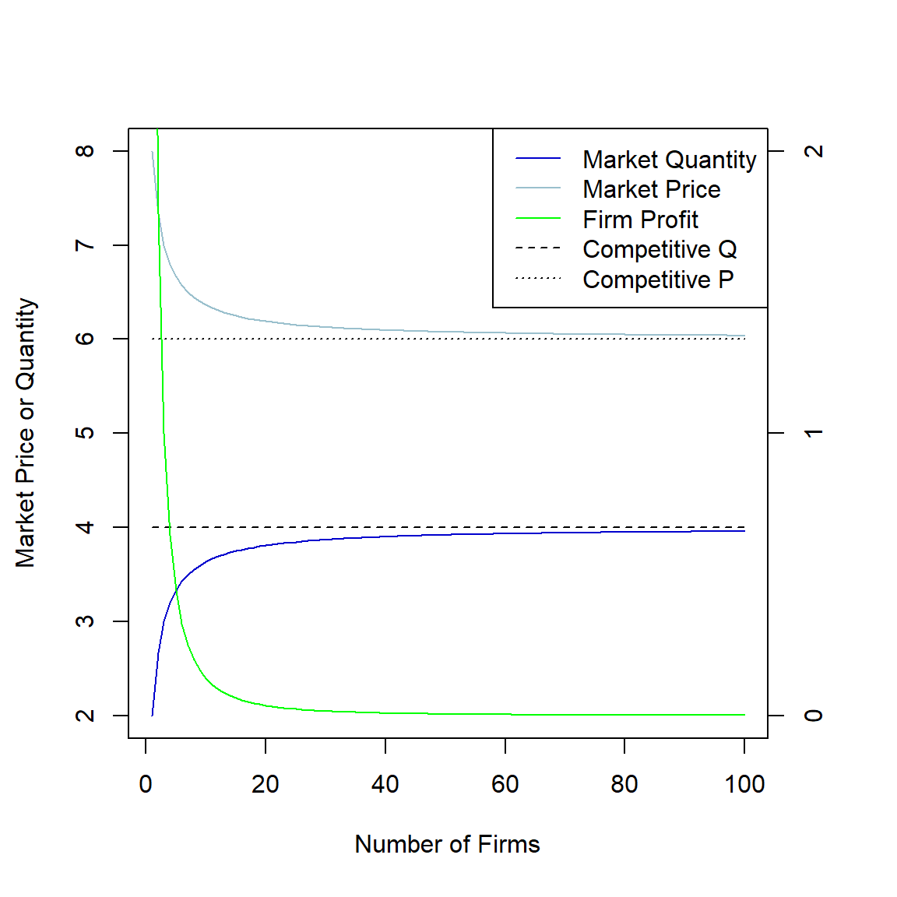
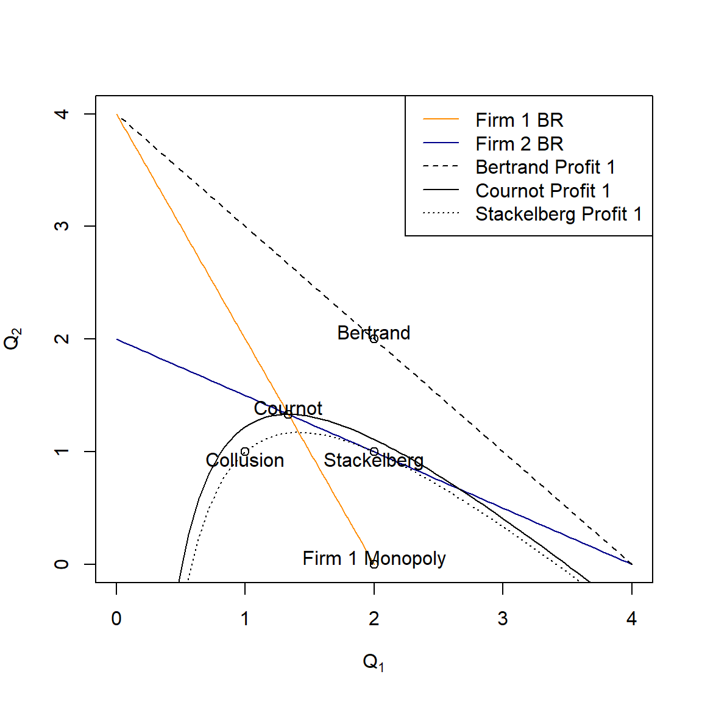

Oligopoly
Characteristics of Oligopoly
- Few Large Producers (often one dominant firm)
- Products may be homogeneous or differentiated
- Mutual Interdependence (Some Control over Price)
- Barriers to Entry
Basic Types of Oligopoly
| Sweezy | Bertrand | Cournot | Stackelberg | |
|---|---|---|---|---|
| Firms | Few | Few | Few? | 2 |
| Strategy | Quantity | Price | Quantity | Price |
| Products | Different | Same | Same | Same |
| Timing | Unclear | Simultaneous | Simultaneous | Sequential |
| Information | Unclear | Perfect | Perfect | Perfect |
| Rationality | Unclear | Full | Full | Full |
Review: Monopoly
Market (inverse) demand:
\[P = 10 - Q\]
Firm Costs:
\[TC = 6Q\]
Solve for the monopoly equilibrium price and quantity.
Suppose that the firms entered a trust that enabled them to collude. What would the quantity of each individual firm be?
Solution
If you chose to try doing this using R (which you might not need to since everything is linear), the code might look a little like this:
library(Rsolnp)## Warning: package 'Rsolnp' was built under R version 4.2.2Dinv = function(x) {
10 - x
}
loss <- function(x) {
-(Dinv(x)*x - 6*x)
}
eq0 <- solnp(
pars = 1,
fun = loss,
LB = 0,
control = list(trace = 0)
)
p0 = Dinv(eq0$pars)
qi = eq0$pars/2\[(Q,P) = (2, 8)\]
\[(Q_1, Q_2) = (1, 1)\]
Bertrand Duopoly
A Bertrand oligopoly is a “winner take all” market in which the firm that charges the lowest price “wins” the opportunity to supply the entire market. If there is a tie, then firms charging the lowest price split the quantity equally.
\[Q_1 = D(P_1,P_2) = \Biggl\{ \matrix{0 \text{ if } P_1 > P_2 \\ Q/2 \text{ if } P_1 = P_2 \\ Q \text{ if } P_1 < P_2}\]
\[Q_2 = D(P_1,P_2) = \Biggl\{ \matrix{0 \text{ if } P_2 > P_1 \\ Q/2 \text{ if } P_2 = P_1 \\ Q \text{ if } P_2 < P_1}\]
“Analytical” Solution
Four Non-Cases:
- \(p_1 \ne p_2\) and \(min\{p_1, p_2\} < MC\)
- \(p_1 = p_2\) and \(min\{p_1, p_2\} < MC\)
- \(p_1 \ne p_2\) and \(min\{p_1, p_2\} > MC\)
- \(p_1 = p_2\) and \(min\{p_1, p_2\} > MC\)
Suppose two identical firms choose their price to maximize profits subject to a “winner take all” market structure. What will the profit-maximizing price of the winning firm(s) be?
Simulation of Bertrand Duopoly
Use the following link to choose your strategy under the demand and cost conditions for the example.
Cournot Duopoly
In a Cournot Duopoly, firms choose quantity instead of price. The market (inverse) demand function determines the price based on the total combined output.
\[\begin{split} P &= D^{-1}(Q) &= 10 - Q \\ &= D^{-1}(Q_1 + Q_2) &= 10 - (Q_1 + Q_2) \end{split}\]
The maximization problem for firm 1 is:
\[max_{Q_1}\{[10 - (Q_1 + Q_2)]Q_1 - 6Q_1\},\]
or:
\[max_{Q_1}\{10Q_1 - Q_1Q_2 - Q_1^2 - 6Q_1\}.\]
Best-Response Functions
The first-order conditions for each firm give us that firm’s best-response function, or reaction function depending on what it expects the other firm to produce.
library(Ryacas, warn.conflicts = FALSE)## Warning: package 'Ryacas' was built under R version 4.2.2pi1 <- ysym('4*Q1 - Q1*Q2 - Q1^2')
pi2 <- ysym('4*Q2 - Q1*Q2 - Q2^2')
br1 <- deriv(pi1, 'Q1') |>
solve(0, 'Q1')
br2 <- deriv(pi2, 'Q2') |>
solve(0, 'Q2') \[\left( Q_{1} = \frac{4 - Q_{2}}{2} \right)\] \[\left( Q_{2} = \frac{4 - Q_{1}}{2} \right)\]
Nash Equilibrium: Graphical Solution
Nash Equilibrium: an outcome where, given the strategy choices of the other players, no individual player can obtain a higher payoff by altering their strategy choice (Emerson, 2020).
The market reaches a Nash Equilibrium when the quantities each firm chooses demonstrate consistent conjectures. In other words, each firm plays its best response to the other firm’s best response (and vice-versa and so on…).
This occurs at the solution of the best response functions. Plot both best-response functions, with \(Q_1\) on the x-axis and \(Q_2\) on the y-axis.
curve((4 - x)/2,
from = 0, to = 4,
ylim = c(0,4), col = 'darkblue',
xlab = expression(Q[1]),
ylab = expression(Q[2]))
curve(4-2*x, from = 0, to = 2, add = TRUE, col = 'darkorange')
legend('topright',
c('BR of Firm 1', 'BR of Firm 2'),
lty = 1, col = c('darkorange', 'darkblue'))Graphical Solution with Isoprofit Curves
library(Rsolnp)
loss <- function(x) {
x1 <- x[1]
x2 <- x[2]
-(4*x1 - x1*x2 - x1^2)
}
br2c <- function(x) {
x1 <- x[1]
x2 <- x[2]
eval(D(quote(4*x2 - x1*x2 - x2^2), 'x2'))
}
cournot <- solnp(
c(1,1),
loss,
ineqfun = br2c, # Solution must be on (or outside) firm 2 BR
ineqLB = -Inf,
ineqUB = 0,
eqfun = function(x) x[1] - x[2], # Solution must be symmetric
eqB = 0,
LB = c(0,0),
control = list(trace = 0)
)
curve((4 - x)/2, # Firm 2 BR
from = 0, to = 4,
ylim = c(0,4), col = 'darkblue',
xlab = expression(Q[1]),
ylab = expression(Q[2]))
curve(4-2*x, from = 0, to = 2,
add = TRUE, col = 'darkorange') # Firm 1 BR
curve(4 - x - 16/(9*x),
add = TRUE, col = 'darkorange') # Firm 1 Cournot Profit
curve(4 - x - 1/x,
add = TRUE, col = 'darkorange', lty = 2) # Firm 1 Profit = 1
curve(4 - x - 2/x,
add = TRUE, col = 'darkorange', lty = 3) # Firm 1 Profit = 2.5
curve(((-9)*x+sqrt(((-9)*x+36)^2-576)+36)/18, from = 0, to = 4/3,
add = T, col = 'darkblue') # Top half of Firm 2 isoprofit
curve(-(sqrt(((-9)*x+36)^2-576)-((-9)*x+36))/18, from = 0, to = 4/3,
add = T, col = 'darkblue') # Bottom half of Firm 2 isoprofit
points(x = c(cournot$pars[1], 2, 1), y = c(cournot$pars[2], 0, 1))
text(x = cournot$pars[1], y = cournot$pars[2], "Cournot", adj = c(0.5,0))
text(x = 2, y = 0, "Firm 1 Monopoly", adj = c(0.5,0))
text(x = 1, y = 1, "Collusion", adj = c(0.5,0))
legend('topright',
c('Firm 1 BR', 'Firm 2 BR', 'Firm 1 Profit = 1',
'Equilibrium Profit', 'Firm 1 Profit = 2'),
lty = c(1, 1, 2, 1, 3),
col = c('darkorange', 'darkblue', 'darkorange', 'darkorange', 'darkorange'))
Note: I took an assist from Ryacas to find the top and
bottom functions for the firm 2 isoprofit function. Here is the code
that helped me:
Notice that the top and bottom of the curve have separate expressions because of the presence of squares and square-root functions with respect to \(x_2\). I could not have done this easily by hand!
Nash Equilibrium: Analytical Solution
Once we have the best-response functions, solving the equilibrium
eq1 <- solve(c(br1, br2), c(0,0), c('Q1', 'Q2')) |>
y_rmvars()
p1 <- 10 - eq1[1] - eq1[2]\[\pmatrix{Q_1 \\ Q_2 \\ P} = \pmatrix{ \frac{4}{3} \\ \frac{4}{3} \\ \frac{22}{3}}\]
Nash Equilibrium: Computational Solution
Nash equilibrium is really tricky without doing at least one of the
profit-function derivatives. The code below does it for our simple
example using only the Rsolnp:: package with the help of
the derivative (D()) function in the basic
stats:: package. (0/10 - do not recommend: extracting the
derivative expression is a PITA.)
library(Rsolnp)
loss <- function(x) {
x1 <- x[1]
x2 <- x[2]
-(4*x1 - x1*x2 - x1^2)
}
br2 <- function(x) {
x1 <- x[1]
x2 <- x[2]
eval(D(quote(4*x2 - x1*x2 - x2^2), 'x2'))
}
cournot <- solnp(
c(1,1),
loss,
ineqfun = br2, # Solution must be on (or outside) firm 2 BR
ineqLB = -Inf,
ineqUB = 0,
eqfun = function(x) x[1] - x[2], # Solution must be symmetric
eqB = 0,
LB = c(0,0),
control = list(trace = 0)
)\[(Q_1, Q_2) = 1.3333333, 1.3333333\]
Simulation of Cournot Duopoly
Use the following link to choose your strategy under the demand and cost conditions for the example.
Final note: as the number of firms in a Cournot duopoly increases, price and quantity approach the perfectly competitive equilibrium.
cournotLim <- data.frame(
N = seq(1,100, by = 1)
)
cournotLim$Q_i = 4/(cournotLim$N+1)
cournotLim$Price = 10 - (4*cournotLim$N/(cournotLim$N+1))
cournotLim$Profit = cournotLim$Price*cournotLim$Q_i - 6*cournotLim$Q_i
cournotLim$Q_m = cournotLim$N*4/(cournotLim$N+1)
par(mar = c(5, 4, 4, 4) + 0.3) # Additional space for second y-axis
plot(cournotLim$N, cournotLim$Q_m, type = 'l',
ylim = c(2,8), col = 'blue3',
xlab = "Number of Firms", ylab = "Market Price or Quantity")
lines(cournotLim$N, cournotLim$Price, col = 'lightblue3')
lines(cournotLim$N, rep(4, nrow(cournotLim)), lty = 2)
lines(cournotLim$N, rep(6, nrow(cournotLim)), lty = 3)
par(new = TRUE) # Add new plot
plot(cournotLim$N, cournotLim$Profit, type = 'l', col = 'green',
axes = FALSE, ylim = c(0,2), xlab = "", ylab = "")
axis(side = 4, at = pretty(range(cournotLim$Profit)))
legend('topright', legend = c("Market Quantity", "Market Price", "Firm Profit", "Competitive Q", "Competitive P"), col = c('blue3', 'lightblue3', 'green', 'black', 'black'), lty = c(1, 1, 1, 2, 3))
Stackelberg (Leader-Follower) Duopoly
The Stackelberg Model assumes one firm is the “leader” and chooses first (here, assume firm 1 is the leader), and the other firm (firm 2) is the “follower” and chooses after observing the leader’s choice of output.
At first we might think that the follower has the upper hand: they get to see the leader’s decision before choosing. But remember: firm 1 knows what firm 2’s best response will be, and lead with the quantity that maximizes firm 1’s profit, subject to the firm 2’s best response function as a constraint.
The decision tree becomes:
Backwards Induction and Subgame Perfect Nash Equilibrium (SPNE)
A common method for solving the equilibrium for a sequential games is backward induction, which leads to a subgame perfect Nash equilibrium (SPNE). Backward induction starts with the last move (or “subgame”) in the game, solves the best response of the player(s) at that stage, and assumes that the player(s) in the preceding round(s) perfectly anticipate the response.
Solving the second and final stage of our game, we have firm 2’s best response as the solution to:
\[max_{Q_2}\{4Q_2 - Q_1Q_2 - Q_2^2\},\]
which we solved in the cournot problem to be:
\[Q_2 = \frac{4 - Q_1}{2}\]
Firm one exploits the fact that it anticipates firm 2’s response and the fact that the game is no longer symmetric, and solves:
\[max_{Q_1}\{4Q_1 - Q_1Q_2 - Q_1^2\}\] subject to:
\[Q_2 = \frac{4 - Q_1}{2}\]
Solve the choice of \(Q_1\) by firm 1.
solution <- solnp(
c(1,1),
loss,
eqfun = br2, # Solution need only satisfy firm 2 best response
eqB = 0,
LB = c(0,0), # No symmetry constraint
control = list(trace = 0)
)Graph of the Solution
The solution for the leader puts the production on an isoprofit curve as close to firm 1’s monopoly outcome as possible, while maintaining a point of tangency with firm 2’s best response function.
The following code demonstrates this property of the equilibrium, with firm 1’s best response function added as a reference.
curve((4 - x)/2,
from = 0, to = 4,
ylim = c(0, 4), col = 'darkblue',
xlab = expression(Q[1]),
ylab = expression(Q[2]))
curve(4-2*x, from = 0, to = 2, add = TRUE, col = 'darkorange')
curve(4 - x - 2/x, add = TRUE, col = 'darkorange')
curve(-(x+sqrt((4-x)^2-4)-4)/2, add = TRUE, col = 'darkblue')## Warning in sqrt((4 - x)^2 - 4): NaNs producedcurve(-(x-4-sqrt((4-x)^2-4))/2, add = TRUE, col = 'darkblue')## Warning in sqrt((4 - x)^2 - 4): NaNs producedlegend('topright',
c('BR of Firm 1', 'BR of Firm 2', 'Leader Profit', 'Follower Profit'),
lty = c('solid', 'solid', 'solid', 'solid'),
col = c('darkorange', 'darkblue', 'darkorange', 'darkblue'))
points(x = c(1, 2, 2), y = c(1, 1, 0))
text(x = 1, y = 1, "Collusion", adj = c(0.5,0))
text(x = 2, y = 1, "Stackelberg", adj = c(0.5,1))
text(x = 2, y = 0, "Firm 1 Monopoly", adj = c(0.5,0))
It’s somewhat worth noting that in this example the leader ends up with the same profits as they would have earned with collusion!
Comparison of Equilibria
compare <- data.frame(
Price = c(8, 6, 22/3, 7),
Quantity1 = c(1, 2, 4/3, 2),
Quantity2 = c(1, 2, 4/3, 1),
Profit1 = c(2, 0, 16/9, 2),
Profit2 = c(2, 0, 16/9, 1),
row.names = c("Collusion", "Bertrand", "Cournot", "Stackelberg")
)
print(compare, digits = 3)## Price Quantity1 Quantity2 Profit1 Profit2
## Collusion 8.00 1.00 1.00 2.00 2.00
## Bertrand 6.00 2.00 2.00 0.00 0.00
## Cournot 7.33 1.33 1.33 1.78 1.78
## Stackelberg 7.00 2.00 1.00 2.00 1.00